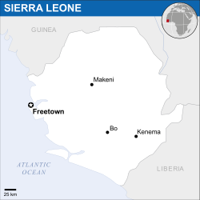

Introduction
Sierra Leone, officially the Republic of Sierra Leone is a West African nation bordered by the Republic of Guinea, the Republic of Liberia, and the Atlantic Ocean. The largest border is with Guinea to the north. Most of Sierra Leone's modern history has been shaped and dominated by British colonialism, the slave trade, and more recently, civil war. [2]
_-_SLE_-_UNOCHA.svg){kind=link}
Sierra Leone did not receive independence from the British empire until April 27th, 1961. After a short period of peace, a long reign of military dictators took control of the country, followed by a civil war in 1991, which did not end until 2002. The civil war depleted natural resources and destroyed significant amounts of infrastructure.
The Ebola Virus epidemic, beginning in 2014, has significantly impacted the country. The recovering country was hit hard, with an almost 50% drop in exports in 2015 compared to the previous year. The virus led to a nationwide three-day quarantine in September 2014. Currently the country is recovering from the virus and is almost completely clean, with some flare ups occurring. [5]
The country has a 48.1% literacy rate favoring males. In information technology, 83 out of every 100 inhabitants has a mobile cellular subscription. This is a very good percentage for a nation like Sierra Leone. However, cellular service remains scarce and unreliable. Only 1.5% of the population is an internet user. [2]